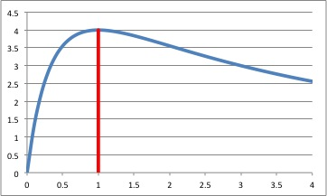

経済学で出る数学
ワークブックでじっくり攻める：応用問題
$f(x)=x\left(\dfrac{a}{x+1}\right)^2$ の増減．
【問】 $x \geq 0$ とする．関数 $f(x)=x\left(\dfrac{a}{x+1}\right)^2$ の増減を調べなさい．
【解答】
- 微分する．
\begin{align}
f^{\prime}(x)&=\left(\dfrac{a}{x+1}\right)^2+
x\times 2\left(\dfrac{a}{x+1}\right)\times \dfrac{-a}{(x+1)^2}\\[2ex]
&=\left(\dfrac{a}{x+1}\right)^2\left(1-\dfrac{2x}{x+1}\right)\\[2ex]
&=\left(\dfrac{a}{x+1}\right)^2\left(\dfrac{1-x}{x+1}\right)．
\end{align}
-
$1$ 階条件．$x=1$．
-
増減表．
\[
\begin{array}{c|c|c|c}
x & x < 1 & 1 & 1 < x \\\hline
f^{\prime}(x)&+&0&-\\\hline
f(x)& \nearrow & 極大 & \searrow
\end{array}
\]
-
グラフ．

【解答終】
ふろく（２）応用問題 一覧へ